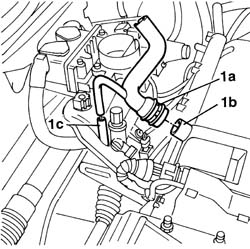
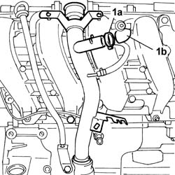
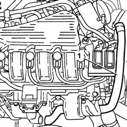
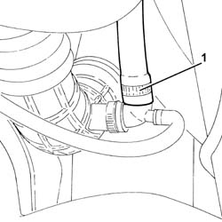
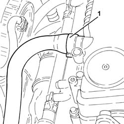
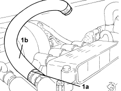

1080D24 engine oil vapour intake pipe - r + r
- Path
- Procedures > 10 ENGINE > 1080 EMISSION CONTROL SYSTEM > 1080D crankcase vapour/gas recirculation system > 1080D24 engine oil vapour intake pipe - r + r
- Kind
- repair procedure (removal / refitting; the operation number is the code)
- Applies to
- engines: 1.2 8v, 1.4 8v, 1.6 16v, 1.9 JTD 8V; all production periods
- Interactive page
- https://sloeber94.github.io/elrnDB-fDbl/en/#/2584274
Applies to: engines: 1.2 8v; all production periods
 Removing
Removing
 Refitting
RefittingOp. 1048A10 AIR FILTER ASSEMBLY - R.R.
1. Remove retaining bands (1a) and disconnect the breather pipe from cam cover (1b) and from air intake manifold (1c).

Applies to: engines: 1.2 8v; all production periods
Refitting
RemovingFit the pipe and connect it to the breather on the cam cover. Secure with a retaining collar.
Connect the pipe to the intake manifold.
Applies to: engines: 1.6 16v; all production periods
Removing
RefittingPosition the vehicle on a lift.
Disconnect the negative battery terminal.
Description | Connector | |
|---|---|---|
- | Battery |
Op. 1048A32 HOSE FROM AIR FILTER TO INTAKE MANIFOLD - R.R.
Op. 7055B54 PROTECTION/GUARD UNDER ENGINE - R.R.
Raise the vehicle on the lift.
1. Open collar (1a) and disconnect oil vapour recovery pipe (1b), then lower the vehicle.

Applies to: engines: 1.6 16v; all production periods
1. Remove the engine oil vapour recovery pipe by removing from the engine compartment.

Applies to: engines: 1.6 16v; all production periods
Refitting
RemovingRefit the engine oil recovery pipe and secure it using the bands.
Op. 1048A32 HOSE FROM AIR FILTER TO INTAKE MANIFOLD - R.R.
Op. 7055B54 PROTECTION/GUARD UNDER ENGINE - R.R.
Connect the negative battery terminal.
Description | Connector | |
|---|---|---|
- | Battery |
Remove the vehicle from the lift.
Applies to: engines: 1.9 JTD 8V; all production periods
Removing
RefittingPosition the vehicle on a lift.
Proceed with the removal
Op. 7055B54 PROTECTION/GUARD UNDER ENGINE - R.R..
1. Loosen the collar and disconnect the engine oil vapour inlet pipe from the T-connector.

Applies to: engines: 1.9 JTD 8V; all production periods
1. Loosen the collar and disconnect the engine oil vapour inlet pipe from the cam cover and remove.

Applies to: engines: 1.9 JTD 8V; all production periods
Refitting
RemovingRefit the oil vapour inlet pipe in its seat and connect to the cam cover and secure with the relevant band.
Connect the engine oil vapour intake pipe to the T-connector and tighten the collar.
Proceed with the refitting
Op. 7055B54 PROTECTION/GUARD UNDER ENGINE - R.R..
Remove the vehicle from the lift.
Applies to: engines: 1.4 8v; all production periods
Removing
RefittingOp. 1048A10 AIR FILTER ASSEMBLY - R.R.
1. Loosen collar (1a) and remove the engine oil vapour inlet pipe (1b) from the air filter.

Applies to: engines: 1.4 8v; all production periods
Refitting
Removing- Refit the oil vapour inlet pipe in its seat and connect to the air filter with the relevant band.
Topics linked from this page (4)
- 1048A10 air cleaner filtering element - replace
- 1048A32 sleeve from air cleaner to intake manifold - r + r
- 7055B54 under-engine guard - r r
- A001 BATTERY